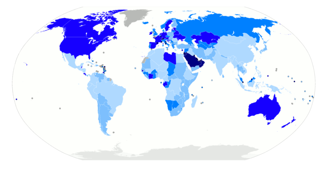
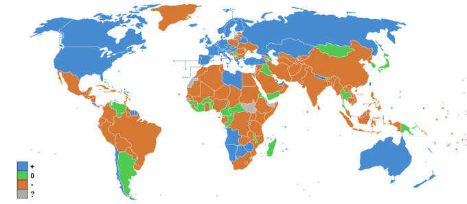

Annually, millions of people around the world decide to emigrate to another country, and this rate is expected to increase over time.
Describe trends of global immigration
Immigration is defined as the movement of people from their home country or region to another country, of which they are not native, to live. There are specific economic factors that contribute to immigration, including the desire to obtain higher wage rates, improve the standard of living, have better job opportunities, and gain an education. Non-economic factors are also significant and include leaving a home country due to persecution, ethnic cleansing, genocide, war, natural disasters, and political control (for example, dictatorship). Throughout history, with improved transportation and technology, immigration has become increasingly common worldwide. Immigration numbers impact both the home country and the host country.
In 2005, the United Nations reported that there were nearly 191 million international immigrants worldwide, which accounted for about 3% of the world population . This represented an increase in the number of immigrants by about 26 million since 1990. It is estimated that 60% of the immigrants moved to developed countries.
The darker the color, the higher the percent immigrants in the population. The darkest blue indicates more than 50% of the population are immigrants. There is no data for countries in grey.
In 2006, the International Organization for Migration estimated the number of immigrants to be more than 200 million globally. Europe, the United States, and Asia were found to host the largest number of immigrants at 70 million, 45 million, and 25 million.
Moreover, it is predicted that immigration rates will continue to increase over time . A 2012 survey that was conducted by Gallup determined that nearly 640 million adults would want to immigrate if they had the chance. About one quarter of those surveyed (23%, or 150 million adults) stated that they would choose to immigrate to the United States. Seven percent (45 million adults) stated that they would choose to immigrate to the United Kingdom. Other top countries listed in the survey included Canada, France, Saudi Arabia, Australia, Germany, and Spain.
It is predicted that global immigration rates will continue to increase in the future.
This graph shows the worldwide net immigration rate in 2011. The blue shows positive rates, the orange is negative, green is stable, and gray represents no data available. It is predicted that global immigration rates will continue to increase in the future.
Regional factors contribute to immigrants' selection of a specific host country. The prospects for employment, wage rate, standard of living, and immigration laws all contribute to relocation decisions. Examples of immigration patterns in certain countries help to illustrate how specific factors influence immigration numbers worldwide.
Immigrants move to another country with the intent to improve their life; however, immigration presents both benefits and challenges for immigrants.
Assess the impact that immigration has on immigrants
Immigration involves the movement of people from their home country to a host country or region, to which they are not native, to live. There are many reasons why immigrants choose to leave their home countries, including economic issues, political issues, family reunification, and natural disasters. In general, no matter what the reasoning is, immigrants move to another country to improve their life. Immigration presents both benefits and challenges for immigrants.
There are many benefits associated with immigration. Primarily, immigrants choose to leave their home country in order to improve their quality of life. Economic reasons for immigrating include seeking higher wage rates, better employment opportunities, a higher standard of living, and educational opportunities . It is also common for immigrants to leave their home country to escape from poverty, religious persecution, oppression, ethnic cleansing, genocide, wars, or a political structure (e.g. repressive dictatorship). No matter what the reasoning is behind immigration, it provides the immigrant with a new start on life and more growth opportunities than were previously available. Success in a new country is not guaranteed and often requires hard work and sacrifices, but many immigrants are willing to take risks for the possibility of a better future for themselves.
This picture shows a group of North African immigrants on a boat near the island of Sicily. When most immigrants choose to leave their home country, the intent is to move in order to obtain a higher quality of life in the host country.
One of the initial challenges faced by immigrants is the cost of immigrating. Many immigrants are seeking better economic conditions in a new country, so the cost of moving can be substantial for them. It is not uncommon for immigrants to liquidate their assets, potentially at a substantial loss, to be able to afford to move. Also, during immigration many individuals are without work and must find work once they get settled.
The majority of challenges associated with immigration deal with assimilating into life in the host country. Many immigrants take low wage jobs until they can adjust to society, gain housing, and obtain an education. Immigrants must learn a new way of life and become familiar with the language and laws of the host country. While many immigrants leave their home country to escape persecution, it is possible that they could face discrimination or even racism in the host country. The process of immigrating is not easy, but for many individuals staying in their home country does not provide them with a promising future. Most immigrants are willing to take risks and work hard to build a solid future even though the process can be challenging.
Immigration has both positive and negative effects on the host and home countries including population totals, employment, and production.
Explain how immigration impacts the host country and the home country of immigrants
Immigration involves the movement of people from their home country to a host country, of which they are not native, to settle and live. People immigrate for many reasons; some of which include economic or political reasons, family reunification, natural disasters, or the desire to change one's surroundings.
In 2006, the International Organization for Migration estimated the number of foreign migrants worldwide to be more than 200 million. Europe, North America, and Asia host the largest number of immigrants totaling 70 million, 45 million, and 25 million in 2005, respectively .
Immigration involves individuals moving from their home country to live in a non-native country. In 2005, Europe, the United States, and Asia had the highest levels of immigration worldwide.
A host country experiences both advantages and challenges as a result of immigration. At certain times throughout history, larger migrations have taken place which created huge population surges. The higher population numbers placed strain on the infrastructure and services within the host country. When immigrants move to a new country, they are faced with many unknowns, including finding employment and housing, as well as adjusting to new laws, cultural norms, and possibly a new language. It can be a challenge for a host country to assimilate immigrants into society and provide the necessary support.
Immigration does cause an increase in the labor force. This can impact great quantities of them if the immigrants are generally the same type of worker (e.g. low-skilled) and immigrate in large enough numbers so as to significantly expand the supply of labor.
Immigration is still a heavily debated topic in many host countries. Some believe that immigration brings many advantages to a country both for the economy and society as a whole. Others believe that high immigration numbers threaten national identity, increase dependence on welfare, and threaten national security (through illegal immigration or terrorism). Another argument is that high immigration rates cheapens labor. Empirically, research has shown this may be partially true. The Brookings Institute found that from 1980 to 2007, immigration only caused a 2.3% depression in the wages of the host country. The Center for Immigration Studies found a 3.7% depression in wages during 1980 to 2000.
The home country also faces specific challenges in regards to immigration. In many cases, immigrants move to another country to provide positive changes for their future. Reasons to immigrate can include the standard of living not being high enough, the value of wages being too low, a slow job market, or a lack of educational opportunities. A home country must analyze immigration statistics to determine and address why citizens are moving to other countries. In the long-run, large amounts of immigration will weaken the home country by decreasing the population, the level of production, and economic spending. If a country is losing citizens due to economic reasons, the situation will not improve until economic changes are made.
At times, citizens of a country may leave because of non-economic reasons such as religious persecution, ethnic cleansing, genocide, war, or to escape the government (for example, a dictatorship). In these cases, it is not uncommon for the citizens to return to the home country at some point once the threat is no longer present. While a citizen is living in another country, if they receive an education and create a solid life, their individual success can also be beneficial to the home country, if they use their acquired skills to make a difference. Many individuals do not forget their home country and continue to support family members financially through the income from the country they migrate to.
{kind=link}
{kind=link}